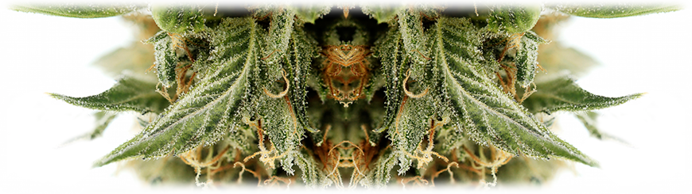
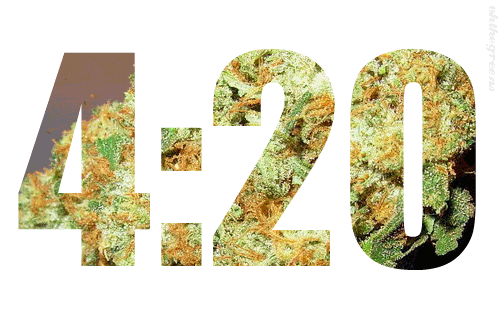

Растение конопля имеет множество возможностей использования и применения человеком. Конопля может быть как полезной для человека и общества, так и нести негативные, а порой даже вредные качества. Одна из наиболее популярных и приятных для многих из производных конопли является марихуана. В то время как конопля широко используется в медицине, сельском хозяйстве и кулинарии, важно понимать, какое именно влияние марихуаны на организм возникает при ее курении.
Физическое воздействие на органы
Мозг и память
Курение конопли может вызвать временное снижение кратковременной памяти из-за спазмов сосудов и микро-отеков в коре головного мозга. При регулярном употреблении это может привести к гибели нервных окончаний и проблемам с концентрацией внимания.
Мужской организм
Возможно повышение сексуальной активности, но существует риск патологической задержки эякуляции. Регулярное употребление ведет к снижению активности сперматозоидов и общего объема спермы.
Женский организм
Высокий уровень каннабиноидов в организме может привести к нарушениям процесса овуляции, что затрудняет естественное зачатие.

Легкие и дыхание
Глубокий вдох и длительная задержка дыма приводят к оседанию смол, что сравнимо по вреду с табаком. Это может вызвать сужение дыхательных путей, кашель и хронический бронхит.
Иммунитет
Каннабис может действовать как иммунодепрессант, снижая защитные функции организма и делая его более уязвимым для бактериальных и вирусных заболеваний.
Общее состояние
Наблюдается нарушение координации движений, сухость во рту, покраснение глаз и сильное чувство голода («жор»), что полностью меняет физическое состояние человека.
Психическое воздействие и зависимость
Психологическая зависимость
При регулярном курении возникает привыкание. Отказ от марихуаны может вызвать раздражительность, головные боли, агрессию, апатию и бессонницу в течение нескольких дней.
Риск психозов
Люди с предрасположенностью к психическим заболеваниям подвержены риску развития психозов и шизофрении даже при минимальных дозах употребления.
Тревожность и страх
Частым негативным последствием употребления травки являются приступы беспричинной тревожности, панические атаки и чувство сильного страха.
🔬 Научный взгляд: Нейроны и рецепторы

В нашем мозге находятся специфические каннабиноидные рецепторы, которые управляют координацией, памятью и решением задач. В норме ими управляет нейромедиатор анандомид.
Тетрагидроканнабинол (ТГК) имитирует действие анандомида, присоединяясь к этим рецепторам. Это активирует нейроны таким образом, что нарушается воспроизведение недавних событий (в гиппокампе) и координация движений (в коре головного мозга).
⏳ Очищение организма
Среднее время выхождения ТГК из организма составляет до 10 дней, но полное очищение тканей может занять до 3 месяцев регулярного воздержания.
🌿 Узнайте о вреде подробнее
Если вас интересуют конкретные риски и развенчание мифов, перейдите в раздел о вреде марихуаны.
Читать про вред